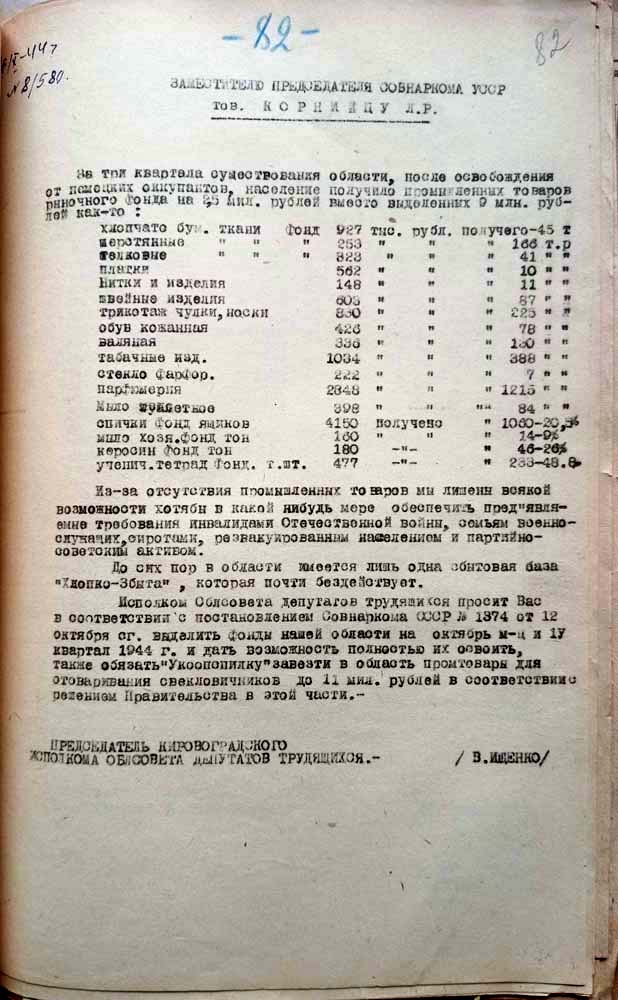
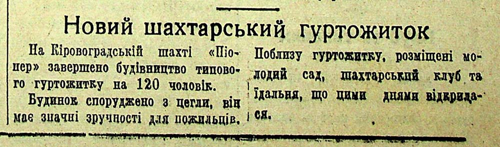

Доповідна записка про роботу тресту їдалень та ресторанів
після звільнення міста Кіровограда від гітлерівських загарбників.
ДАКірО, Ф.Р-2860, оп.1, спр. 252, арк. 17, 17 зв.
Лист облвиконкому до начальника державтоінспекції УМ НКВС у Кіровоградській області
про взяття на облік автомобілів, отриманих за рішення Раднаркому УРСР.
ДАКірО, Ф.Р-2860, оп.1, спр. 252, арк. 18
Доручення голови Кіровоградського облвиконкому про виділення листового заліза для ремонту резервуарів
нафтобази надіслане до виконання директору заводу «Червона зірка».
ДАКірО, Ф.Р-2860, оп.1, спр. 252, арк. 60
Доручення голови Кіровоградського облвиконкому
керуючому Кіровоградським обласним комунальним банком про кредитування комунальних установ міста.
ДАКірО, Ф.Р-2860, оп.1, спр. 252, арк. 63
Лист директора облторгівлі керівництву області
про проблеми з постачанням області продовольчими товарами.
ДАКірО, Ф.Р-2860, оп.1, спр. 252, арк. 161, 161 зв.
Лист керівників банківських установ області голові облвиконкому
про стан фінансування відновлення житлового фонду м. Кіровограда.
ДАКірО, Ф.Р-2860, оп.1, спр. 246, арк. 324, 324 зв.
Лист голови Кіровоградського облвиконкому народному комісару промисловості УРСР
про стан забезпечення паливом та будівельними матеріалами для відбудови області.
ДАКірО, Ф.Р-2860, оп.1, спр. 251, арк. 32
Лист голови Кіровоградського облвиконкому
заступнику голови РНК УРСР про стан ремонту комбайнів в області.
ДАКірО, Ф.Р-2860, оп.1, спр. 251, арк. 33
Доповідна записка голови Кіровоградського облвиконкому
заступнику голови РНК УРСР про необхідність будівництва млинів у м. Кіровограді.
ДАКірО, Ф.Р-2860, оп.1, спр. 251, арк. 41
Лист голови Кіровоградського облвиконкому
заступнику голови РНК УРСР про відбудову шкіл у Кіровоградській області.
ДАКірО, Ф.Р-2860, оп.1, спр. 251, арк. 52
Лист голови Кіровоградського облвиконкому
заступнику голови РНК УРСР про забезпечення області промисловими товарами широкого вжитку.
ДАКірО, Ф. Р-2860, оп.1, спр. 251, арк. 82
Трудящі міста Кіровограда на суботнику з відбудови Кіровоградської електростанції.
ДАКірО, колекція фотодокументів, П-8573
Стаття «Напередодні нового будівельного сезону»
про проблеми та перспективи будівельних планів на Кіровоградщині.
ДАКірО, ДІФ, газета «Кіровоградська правда», 03.03.1946, № 46, с. 1, інв. № 1459
Інтерв'ю з директором заводу О. Кругловим
«Відбудовується Кам'янський механічний завод».
ДАКірО, ДІФ, газета «Кіровоградська правда», 29.12.1945, №241, с. 1, інв. № 1456
Стаття С. Миколаєнко «Завод "Профінтерн" буде відбудовано».
ДАКірО, ДІФ, газета «Кіровоградська правда», 06.04.1946, № 70, с. 2, інв. № 1460
Кореспонденція «Форсувати відбудову заводу "Червона зірка"».
ДАКірО, ДІФ, газета «Кіровоградська правда», 07.04.1946, № 71, с. 1, інв. № 1460
Повідомлення І. Фінкеля «На відбудові будинку культури»
про заклад культури с. Дмитрівка Знам’янського району.
ДАКірО, ДІФ, газета «Кіровоградська правда», 28.04.1946, № 84, с. 3, інв. № 1460
Повідомлення «Новий шахтарський гуртожиток».
ДАКірО, ДІФ, газета «Кіровоградська правда», 11.06.1946, № 113, с. 5, інв. № 1462
Повідомлення «Новий продуктовий магазин».
ДАКірО, ДІФ, газета «Кіровоградська правда», 14.06.1946, № 115, с. 4, інв. № 1462
Фото млина, відбудованого у с. Кам'янка. Автор – Г. Вєрушкін.
ДАКірО, ДІФ, газета «Кіровоградська правда», 16.06.1946, № 117, с.35, інв. № 1462
Повідомлення «Індивідуальне будівництво».
ДАКірО, ДІФ, газета «Кіровоградська правда», 19.06.1946, № 119, с. 1, інв. № 1462
Стаття О. Цибаньової «Майбутні педагоги»
про відновлення діяльності Кіровоградського педагогічного інституту.
ДАКірО, ДІФ, газета «Кіровоградська правда», 22.09.1946, № 187, с. 2, інв. № 1465
Стаття Д. Семенкова «Створити нормальні умови для навчання»
про відбудову середньої школи у с. Лозоватка.
ДАКірО, ДІФ, газета «Кіровоградська правда», 09.07.1947, № 148, с. 5, інв. № 1470